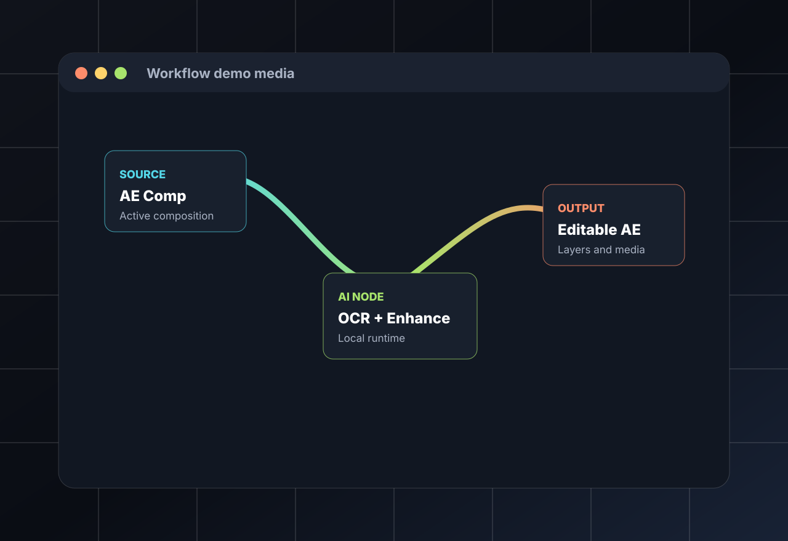

Creative AI for motion work
AetherFlow
Node-based AI workflows for Adobe After Effects.
Build visual AI pipelines for enhancement, OCR, depth, image generation, and video processing without leaving the creative context of After Effects.
Early-stage and moving quickly.
Visual workflow previews
See how AetherFlow fits into real production work.
Demo captures will focus on the moments creative users care about: building node graphs, processing footage, reconstructing editable text, and bringing finished results back into After Effects.



What it does
AI workflows that feel like a creative tool.
Build AI workflows visually inside After Effects using connected nodes instead of one-off scripts and scattered command-line tools.
Run local AI tools from a node interface, then bring the output back into your comp for review, timing, layering, and finishing.
Connect models for upscaling, depth, OCR, image generation, motion tools, and video processing as reusable creative pipelines.
Reduce repetitive production work so motion designers, editors, VFX artists, and teams can spend more time on the actual shot.
Key features
Built around the way artists iterate.
Node-based workflow editor
Build and reuse AI pipelines visually, with source, processing, and output steps laid out clearly.
Local AI model execution
Run supported workflows locally so experiments stay close to the project and do not require a hosted backend.
After Effects integration
Use AetherFlow from the creative environment where comps, layers, timing, and revisions already live.
Upscaling / enhancement
Prepare restoration, cleanup, and enhancement workflows for footage and generated assets.
OCR and template text workflows
Explore text reconstruction paths that turn rasterized references into editable AE text layers.
Depth / normal / UV workflows
Generate supporting passes that help with compositing, stylization, relighting, and spatial effects.
Future camera extraction / motion tools
Roadmap work for camera extraction, tracking helpers, and motion-aware nodes is planned as the project matures.
Support development
Public downloads, private source, and optional support.
AetherFlow keeps user-facing documentation and release downloads public while source development remains private. Optional sponsorship helps keep the project moving without locking releases behind payment.
- Development time
- Testing hardware
- GPU/runtime experiments
- Model integration work
- Documentation
- Installer and packaging work
- Continued development
GitHub Sponsors Active
Latest release Public
Documentation Public
Support is optional. Every release remains public, transparent, and usable without payment.
Roadmap
Future Features
These roadmap items show where the project is heading while keeping the current release honest about what is ready today.
Stable installer
More reliable OCR workflows
Better video enhancement tools
Camera extraction / motion tracking nodes
Model manager
Improved documentation
Creative-user onboarding
Cross-platform packaging
Public downloads
Documentation and releases stay public.
Public pages provide user-facing documentation, release downloads, checksums, and install notes. Source code and internal development materials are private.